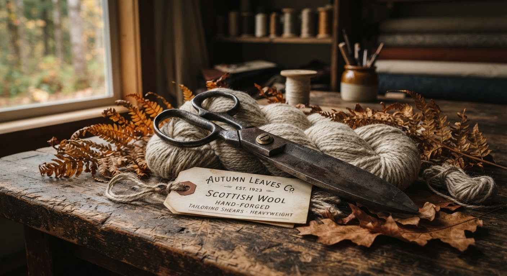
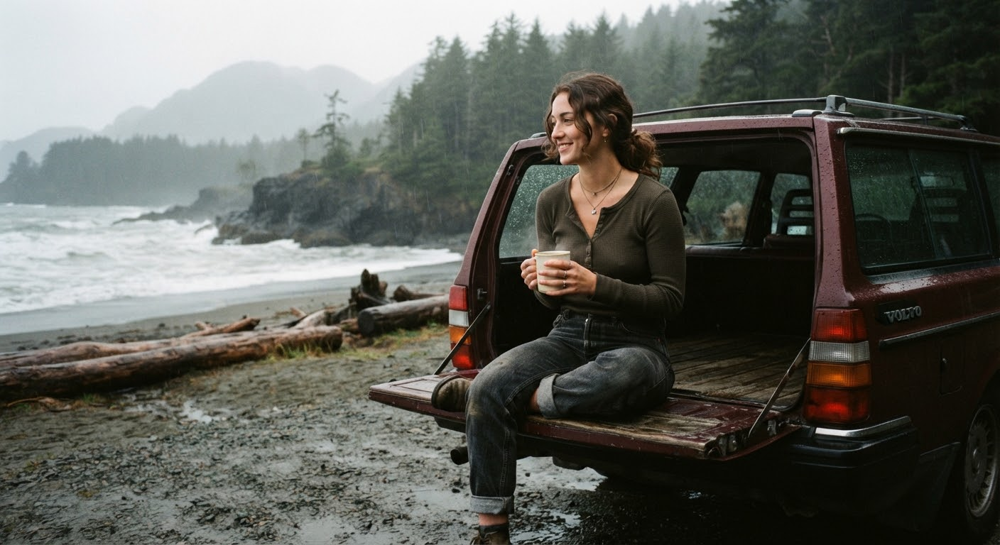
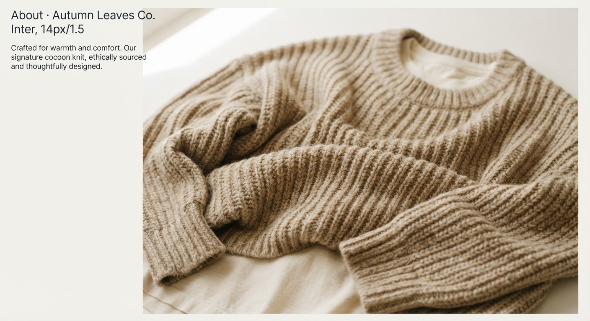
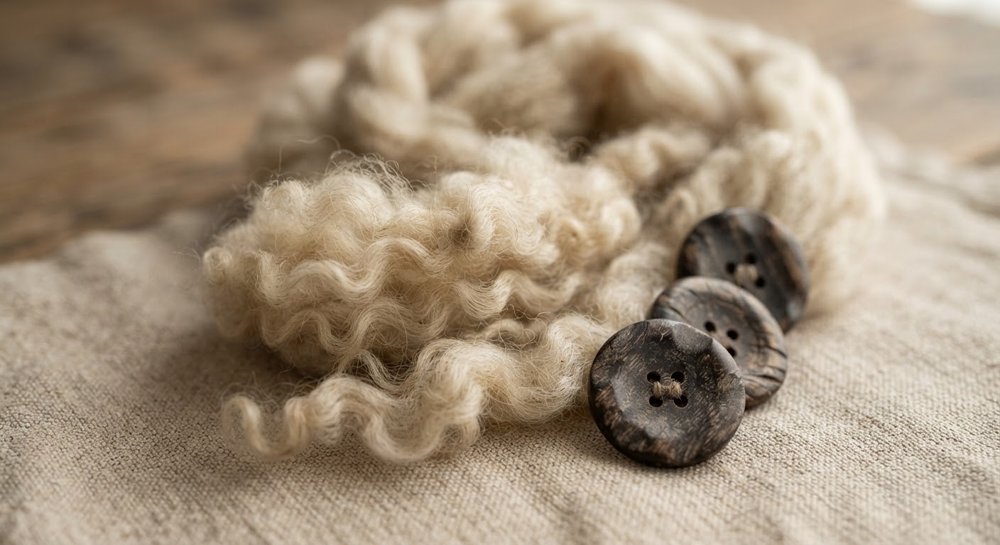
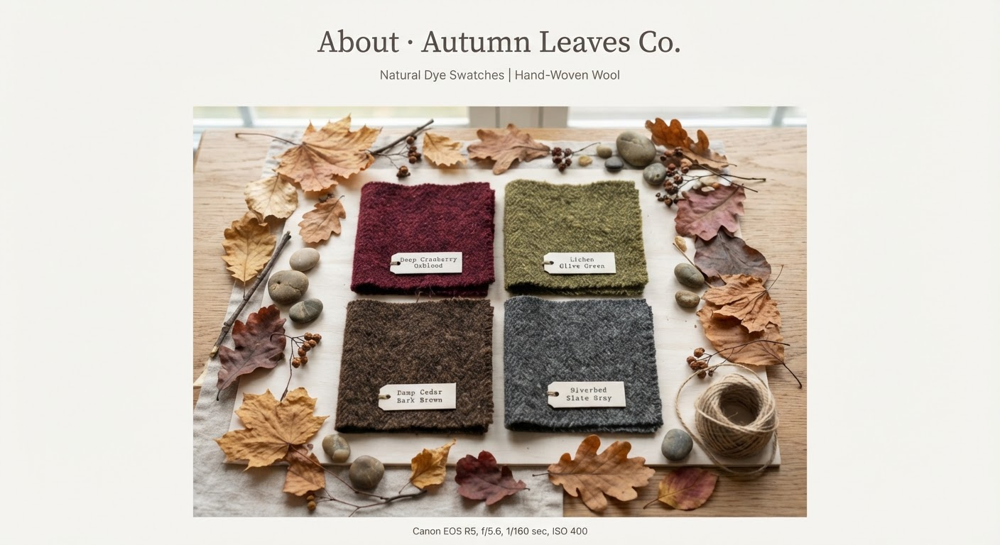
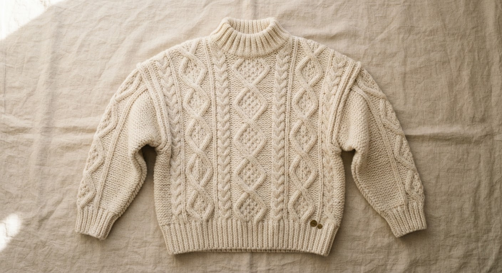
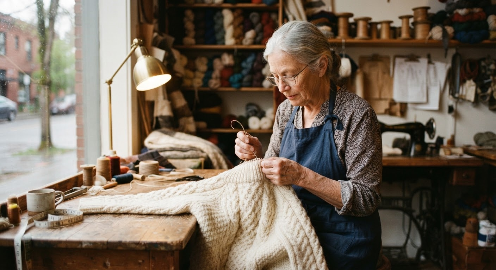

Archival Dispatch · Vol. XXEst. 2004 — Olympic Peninsula, WA
A Love Letter to Overcast Skies, Warm Wool, and Forgotten Autumns.
Longitude 47.8021° N
Olympic Mist, 52°F, Rain Imminent
Prologue: October 2004
“Clothes that feel like old memories: modest, grounding, and effortlessly enduring.”
Founded along the rain-slicked highway between Port Angeles and Aberdeen, where moss blankets Western hemlocks and wool is not an aesthetic, but shelter.

Plate No. 01 — The Master Cutter’s BenchPort Angeles Studio
2004The Foundational Premise
We grew weary of garments engineered to disintegrate after one wet season. We wanted pieces soaked in the quiet soul of the Pacific Northwest — sweaters that could take the spray of the Salish Sea and survive twenty winters in a cedar chest.
Sign-off:Elena & Clara Thorne, Founders
Chapter I · Lineage
The Honest Weight of an Era Remembered.
A design philosophy born at the intersection of turn-of-the-millennium understated intimacy and the rugged timber heritage of Puget Sound.

Archive Photo 04-BLake Crescent, WA01 / The 2000s Quiet Dressing
Subtle Intimacy Over Loud Trends
Before algorithms dictated taste, autumn dressing possessed an honest simplicity: low-key fitted waffle henleys, ankle-length floor-skimming cardigans, heavyweight thermal ribs, and rinsed unwashed denim. It was clothing for road trips without destinations, acoustic CDs playing on repeat, and damp socks warmed by cast-iron woodstoves.
02 / The PNW Atmosphere
Shaped by Cedar, Salt & Constant Rain
Living where it rains 220 days a year teaches you reverence for fiber. The pine needles stuck to wet asphalt, cedar smoke drifting through twilight mist, and the damp ocean chill demanded fabrics that breathe while protecting. Our silhouettes marry that rugged shelter with soft, feminine quietness.
Highway 101 NorthMilepost 192
“We do not design garments for seasons that flash past; we make coats for lives that unfold quietly.”
— Autumn Leaves Co. Charter, Port Townsend Atelier
Chapter II · The Triptych
Three Immutable Pillars of Autumn Craft.
Every yard of yarn spun, pattern drafted, and seam taped passes through these core tenets.
Pillar I

Mindful Modesty & Comfort
We design generous, grounding silhouettes that shelter the body rather than constrict it. Roomy drop-shoulders, high double-folded necklines, and ankle-grazing hemlines celebrate comfort as the ultimate luxury.
Zero Trend Turnover
Pillar II

Heirloom Natural Fibers
100% non-mulesed merino, brushed Shetland lambswool, heavy unbleached cotton drills, and recycled buffalo horn buttons. We never introduce synthetic blends that shed microplastics into our waterways.
100% Biodegradable Integrity
Pillar III

Forest Floor Color Stories
Every shade in our archive corresponds to botanical specimens gathered from the Olympic understory: decaying bigleaf maples, damp Western redcedar bark, smooth Hoh River stones, and winter huckleberries.
Botanical & Low-Impact Dyes
The Olympic Understory Color Index
Cedar PitchDeep Espresso
Wild CranberryOxblood Tannin
Lichen HemlockDamp Sage
River SlateOlympic Stone
Toasted AcornWarm Oatmeal
Unbleached ParchmentAntique Cream
Chapter III · Specimen Study
The Anatomy of our Signature Cable Knit.
Dissecting the architecture of Model No. 04 — our heirloom fisherman knit, iterated over eighteen autumns.
Garment Weight: 840g Heavyweight Pure Wool

Figure 4.1 — Anatomical BreakdownClick markers to inspect
01 / Double-Rib Structured Collar
Knitted with 2×2 tightly tensioned gauge that preserves its shape through decades of heavy wear. Sits high against the nape to block rain and Pacific ocean winds without pinching.
02 / 4-Ply Scottish Spun Lambswool
Spun using unbleached highland fleece washed in mountain spring water. Naturally retaining high lanolin levels for water-repellent durability in PNW rainfall.
03 / Engineered Drop-Shoulder Pitch
Angled down 14 degrees to eliminate fabric bunching under wax jackets. Gives an effortless, relaxed silhouette that drapes gracefully over layered tees and collared shirts.
04 / Stamped Brass Archival Tag
Affixed at the inner side seam with heavy waxed thread. Each piece bears an individualized hand-stamped five-digit register code, guaranteeing lifetime atelier mending.
Chapter IV · Responsibility
Slow Batches, Regenerative Farms & Zero Synthetics.
Fast fashion produces more garments in four hours than our atelier will cut in an entire year. We deliberately operate in small, numbering runs capped at 120 pieces per colorway. When an edition sells out, the sheep are shorn for the next winter.
0%Petroleum Synthetics
120Max Edition Per Run
LifetimeAtelier Mending Warranty

Maren LindqvistMaster Knitter & Pattern Archivist
Atelier Seattle since 2008
“We consider a sweater successful only if its owner passes it down to a niece, daughter, or close companion fifteen years after purchase. If a seam fails, we fix it in our Seattle workshop. Clothes shouldn’t be disposable; they should gather stories.”
Elena ThorneCo-Founder & Creative Director
“Natural wool is alive. It absorbs moisture from the damp Pacific morning air and breathes it out when you step indoors next to a radiator. There is a sacred intelligence in organic sheep fleece that polyester will never replicate.”
Maren LindqvistHead of Technical Knitwear
Chapter V · The Chronology
Twenty Autumns of Quiet Growth.
2004 — 2026 Archival Timeline
2004The Bainbridge Island Shed
The Thorne sisters produce 40 hand-knit cardigans for local Olympic coffee houses, selling out in three rainy weekends.
2011Shetland Wool Direct
Establishment of direct farm sourcing in the North Atlantic, eliminating intermediate textile brokers and ensuring non-mulesed ethics.
2018The Pioneer Square Atelier
Opening of our light-filled Seattle brick-and-timber workshop, housing our mending bench and physical archive catalog.
2026The Anniversary Edition
Re-release of the original 2004 Cable Fisherman Cardigan in a limited run of 200 serialized pieces in Wild Cranberry and Toasted Acorn.
Epilogue
Walk with Us Through Autumn.
Whether you are curling up with a damp novel in a seaside cottage or braving the morning ferry commute in November fog, we would be honored to clothe your autumn.